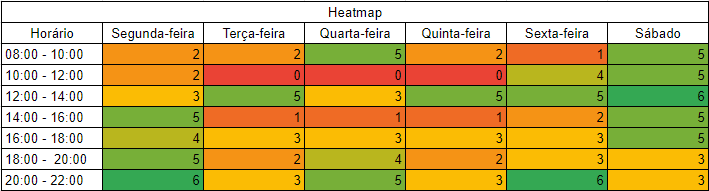

Cronograma¶
1. Introdução¶
Este documento tem como objetivo definir um cronograma para o projeto de acordo com as entregas impostas na disciplina de Requisitos de Software, seguindo datas e artefatos exigidos com seus respectivos responsáveis e revisores.
2. Heatmap¶
Um Heatmap é uma ferramenta de visualização de dados que usa cores para mostrar a distribuição de valores em uma matriz. O Heatmap foi uma ferramenta valiosa para a equipe economizar tempo e esforço ao agendar reuniões.

Tabela 1 - Heatmap da equipe
Fonte: Autor(es)
3. Cronograma¶
O cronograma foi separado em pontos de controle afim de organizar de uma maneira mais clara das etapas.
3.1 Ponto de controle 1¶
O ponto de controle 1 tem como foco o planejamento para a execução do projeto, como as ferramentas que serão usadas, a metodologia adotada, etc.
| Artefato | Elaboração | Revisão | Autor(es) | Revisor |
|---|---|---|---|---|
| Página Inicial (equipe) e GitHub Pages | Início: 07.04.2023 Término: 15.04.2023 | Início: 16.04.2023 Término: 16.04.2023 | Matheus e Rafael | Ana Beatriz |
| Aplicativo Selecionado | Início: 07.04.2023 Término: 15.04.2023 | Início: 16.04.2023 Término: 16.04.2023 | Matheus | Diógenes |
| Ferramentas do Projeto | Início: 07.04.2023 Término: 15.04.2023 | Início: 16.04.2023 Término: 16.04.2023 | Brunna | Milena |
| Cronograma | Início: 07.04.2023 Término: 15.04.2023 | Início: 16.04.2023 Término: 16.04.2023 | Ana Beatriz e Milena | Brunna |
| Metodologia | Início: 07.04.2023 Término: 15.04.2023 | Início: 16.04.2023 Término: 16.04.2023 | Diógenes | Rafael |
| Rich Picture | Início: 07.04.2023 Término: 15.04.2023 | Início: 16.04.2023 Término: 16.04.2023 | Rafael | Matheus |
| Gravação e Postagem | Início: 17.04.2023 Término: 17.04.2023 | Início: 17.04.2023 Término: 17.04.2023 | Ana Beatriz, Brunna, Diógenes, Matheus, Milena e Rafael | Diógenes |
Tabela 1: Cronograma planejado do ponto de controle 1
Fonte: Autor(es)
3.2 Ponto de controle 2¶
O ponto de controle 2 tem como objetivo Elicitação – Técnicas e Priorização
| Artefato | Elaboração | Revisão | Autor(es) | Revisor |
|---|---|---|---|---|
| Perfil dos usuários | Início: 18.04.2023 Término: 22.04.2023 | Início: 23.04.2023 Término: 23.04.2023 | Brunna e Rafael | Matheus e Diógenes |
| Personas | Início: 23.04.2023 Término: 27.04.2023 | Início: 28.04.2023 Término: 28.04.2023 | Ana Beatriz e Diógenes | Rafael e Milena |
| Técnicas de elecitação usadas e que serão usadas | Início: 18.04.2023 Término: 27.04.2023 | Início: 28.04.2023 Término: 28.04.2023 | Matheus | Ana Beatriz |
| Técnicas priorização usadas e que serão usadas no projeto. | Início: 18.04.2023 Término: 27.04.2023 | Início: 28.04.2023 Término: 28.04.2023 | Milena | Brunna |
| Gravação e Postagem | Início: 29.04.2023 Término: 29.04.2023 | Início: 30.05.2023 Término: 30.05.2023 | Ana Beatriz, Brunna, Diógenes, Matheus, Milena e Rafael | Rafael |
Tabela 2: Cronograma planejado do ponto de controle 2
Fonte: Autor(es)
3.3 Ponto de controle 3¶
O ponto de controle 3 tem como objetivo a modelagem de Requisitos.
| Artefato | Elaboração | Revisão | Autor(es) | Revisor |
|---|---|---|---|---|
| Cenários | Início: 02.05.2023 Término: 10.05.2023 | Início: 11.05.2023 Término: 14.05.2023 | Milena | Diógenes |
| Léxico | Início: 02.05.2023 Término: 10.05.2023 | Início: 11.05.2023 Término: 14.05.2023 | Matheus | Ana Beatriz e Brunna |
| Use Case | Início: 02.05.2023 Término: 10.05.2023 | Início: 11.05.2023 Término: 14.05.2023 | Brunna e Diógenes | Milena e Rafael |
| Especificação Suplementar | Início: 02.05.2023 Término: 10.05.2023 | Início: 11.05.2023 Término: 14.05.2023 | Ana Beatriz e Rafael | Matheus |
| Gravação e Postagem | Início: 15.05.2023 Término: 15.05.2023 | Início: 16.05.2023 Término: 17.05.2023 | Ana Beatriz, Brunna, Diógenes, Matheus, Milena e Rafael | Diógenes |
Tabela 3: Cronograma planejado do ponto de controle 3
Fonte: Autor(es)
3.4 Ponto de controle 4¶
O ponto de controle 4 refere-se à Modelagem de Requisitos - Ágil
| Artefato | Elaboração | Revisão | Autor(es) | Revisor |
|---|---|---|---|---|
| Histórias de Usuário | Início: 18.05.2023 Término: 20.05.2023 | Início: 20.05.2023 Término: 20.05.2023 | Ana Beatriz e Brunna | Milena e Rafael |
| Backlogs | Início: 20.05.2023 Término: 22.05.2023 | Início: 22.05.2023 Término: 22.05.2023 | Milena e Rafael | Diógenes e Matheus |
| NFR Framework | Início: 18.05.2023 Término: 22.05.2023 | Início: 22.05.2023 Término: 22.04.2023 | Diógenes e Matheus | Ana Beatriz e Brunna |
| Gravação e Postagem | Início: 23.05.2023 Término: 23.05.2023 | Início: 24.05.2023 Término: 24.05.2023 | Ana Beatriz, Brunna, Diógenes, Matheus, Milena e Rafael | Rafael |
Tabela 4: Cronograma planejado do ponto de controle 4
Fonte: Autor(es)
3.5 Ponto de controle 5¶
O ponto de controle 5 foi divido em duas entregas respectivas, tendo como o foco a análise de requisitos: verficação e validação.
3.5.1 Ponto de controle 5.1¶
| Artefato | Elaboração | Revisão | Autor(es) | Revisor |
|---|---|---|---|---|
| Verificação e Validação | Início: 25.05.2023 Término: 02.06.2023 | Início: 03.06.2023 Término: 04.06.2023 | Ana Beatriz, Brunna, Diógenes, Matheus, Milena e Rafael | Rafael |
| Gravação e Postagem | Início: 05.06.2023 Término: 05.06.2023 | Início: 06.06.2023 Término: 07.06.2023 | Ana Beatriz, Brunna, Diógenes, Matheus, Milena e Rafael | Milena |
Tabela 5: Cronograma planejado do ponto de controle 5.1
Fonte: Autor(es)
3.5.2 Ponto de controle 5.2¶
| Artefato | Elaboração | Revisão | Autor(es) | Revisor |
|---|---|---|---|---|
| Verificação e Validação | Início: 08.06.2023 Término: 09.06.2023 | Início: 10.06.2023 Término: 11.06.2023 | Ana Beatriz, Brunna, Diógenes, Matheus, Milena e Rafael | Ana Beatriz |
| Gravação e Postagem | Início: 12.06.2023 Término: 12.06.2023 | Início: 13.06.2023 Término: 14.06.2023 | Ana Beatriz, Brunna, Diógenes, Matheus, Milena e Rafael | Brunna |
Tabela 6: Cronograma planejado do ponto de controle 5.2
Fonte: Autor(es)
3.6 Ponto de controle 6¶
Ponto de controle 6 - Gerência de Desenvolvimento de Software orientada à baseline de Requisitos
| Artefato | Elaboração | Revisão | Autor(es) | Revisor |
|---|---|---|---|---|
| Backward From | Início: 15.06.2023 Término: 18.06.2023 | Início: 18.06.2023 Término: 18.06.2023 | Diógenes e Milena | Matheus e Brunna |
| Forward From | Início: 15.06.2023 Término: 18.06.2023 | Início: 18.06.2023 Término: 18.06.2023 | Matheus e Brunna | Diógenes e Matheus |
| Matriz Geral | Início: 15.06.2023 Término: 18.06.2023 | Início: 18.06.2023 Término: 18.06.2023 | Ana Beatriz e Rafael | Diógenes e Milena |
| Gravação e Postagem | Início: 19.06.2023 Término: 19.06.2023 | Início: 20.06.2023 Término: 20.06.2023 | Ana Beatriz, Brunna, Diógenes, Matheus, Milena e Rafael | Ana Beatriz |
Tabela 7: Cronograma planejado do ponto de controle 6
Fonte: Autor(es)
3.7 Ponto de controle final¶
No ponto de controle final deve ser feita uma verificação, correção e refinamento dos artefatos para ser entregue na avaliação final do projeto.
| Artefato | Elaboração | Revisão | Autor(es) | Revisor |
|---|---|---|---|---|
| Verificação, correção e refinamento | Início: 22.06.2023 Término: 30.06.2023 | Início: 01.07.2023 Término: 02.07.2023 | Ana Beatriz, Brunna, Diógenes, Matheus, Milena e Rafael | Diógenes |
| Gravação e Postagem | Início: 03.07.2023 Término: 03.07.2023 | Início: 04.07.2023 Término: 05.07.2023 | Ana Beatriz, Brunna, Diógenes, Matheus, Milena e Rafael | Matheus |
Tabela 8: Cronograma planejado do ponto de controle final
Fonte: Autor(es)
Referências¶
SALES, André Barros. Plano de ensino da disciplina. Disponível em: https://aprender3.unb.br/pluginfile.php/2523005/mod_resource/content/27/Plano_de_Ensino%20RE%20202301%20Turma%202.pdf.
Histórico de versão¶
A Tabela 9 registra o histórico de versão desse documento.
| Data | Versão | Descrição | Autor(es) | Revisor |
|---|---|---|---|---|
| 11.04.2023 | 1.0 | Criação do documento, adição de introdução e criação do template do cronograma | Milena | Brunna |
| 15.04.2023 | 1.1 | Adição do cronograma dos pontos de controle 1, 3, 5 e final | Milena | Brunna |
| 15.04.2023 | 1.2 | Adição do cronograma dos pontos de controle 2, 3 e 6 | Ana Beatriz | Brunna |
| 29.04.2023 | 1.2 | Adição de legendas e fontes nas tabelas | Milena | Ana Beatriz |
| 04/07/2023 | 2.0 | Padronização do documento e adição da referência | Ana Beatriz | Milena |